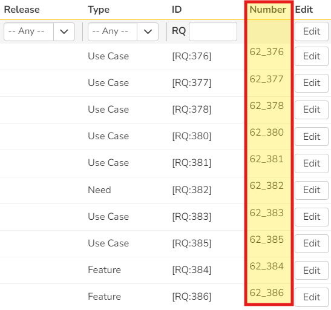

SpiraApp Tutorial
Compatible with SpiraTest, SpiraTeam, SpiraPlan
Introduction
In this tutorial, you will learn how to create a fully functioning SpiraApp that adds features in multiple places in Spira. It will help you see in practice how a SpiraApp is put together and can add features to Spira.
This tutorial SpiraApp:
- Uses product settings
- Runs on the Requirement Details page
- Automatically replaces specific words when you save the Requirements description
- Adds a Quick Link button on the Requirement Details page
- Adds a dashboard widget to the Product Home Page
- Adds a column on the requirement list page
Prerequisites
- Basic developer understanding of things like Node.js, JavaScript, the command line, and YAML files
- Node.js (the latest LTS version)
- Familiarity with the basic development process for a SpiraApp
- A GitHub account (optional for this tutorial)
- Git installed on your computer (optional for this tutorial)
Steps in the tutorial
- Create the manifest
- Add JavaScript
- Build, install, and test the SpiraApp
- Add automation
- Add user interactivity to a details page
- Add a column to a grid
- Add a dashboard widget
First Working SpiraApp
We will start with a very simple SpiraApp and then add features to it later
Create the Manifest
The manifest is the heart of your SpiraApp. It contains all of the information that describes what your SpiraApp is and where it will run within a users Spira web application.
Create a new folder for your SpiraApp and create a new file in it called manifest.yaml.
Using Git is optional
You do not need to use Git for this tutorial. It is optional.
If you wish to use Git, create a local git repository in this folder and publish to your remote over choice (e.g. GitHub or GitLab) to keep a backup of your work.
Note that you will have to create a repository on GitHub to submit your SpiraApp for approval, so this follows best practices. Once the repository is created, immediately create a new branch and do your development there, leaving the main branch mostly untouched. This makes it very simple to make a pull request for the official submission process later.
Our SpiraApp will be simple but it still needs a complete manifest. Open the manifest file in your preferred code editor and copy and paste the following:
| manifest.yaml | |
|---|---|
1 2 3 4 5 6 7 8 9 10 11 12 | |
Replace the value for "guid" with a newly generated GUID so your app has a unique identifier when you test and publish it. No two SpiraApps should have the same GUID.
Add the following to the bottom of the manifest. This tells Spira to load a custom script on the Requirement details page (this page has an ID of 9 - you can see all page ids here):
| manifest.yaml | |
|---|---|
13 14 15 16 | |
Next, define two product settings that we will use later. Add the following plain text setting types to the manifest:
| manifest.yaml | |
|---|---|
17 18 19 20 21 22 23 24 25 26 27 28 | |
Add JavaScript
SpiraApps use JavaScript to carry out most of their functionality. The line code: file://requirement.js in the manifest file above is used when creating the SpiraApp to take the contents of the file called requirement.js and embed it into the SpiraApp.
We must therefore create this file and add logic to it.
- Create a new file called "requirement.js" in the same directory as your manifest
- Open it in a code editor.
- Copy the code below into the file and save it
This javascript file will do a very simple task: show a short message to the user about the current artifact when they load a requirement. Note how the code calls the "spiraAppManager" - this is the primary way your code will interact with Spira and APIs.
| requirement.js | |
|---|---|
1 2 3 4 5 6 7 8 9 10 11 | |
Deploy and Test
Build
Before you can test your new SpiraApp, you have to create a development build of it. To do that, first use git to clone the SpiraApp package generator to your computer in a different directory. Follow the setup instructions in the package generators README.
To build your SpiraApp, open a terminal at the package generator's folder and run the command below, replacing "MySpiraAppFolder" with the path to your SpiraApp folder and "BundleStorageFolder" to the folder you want to save the generated .spiraapp file.
npm run build --input="C:\MySpiraAppFolder" --output="C:\BundleStorageFolder"
Install
In order to install your SpiraApp, carry out the following steps
- login to Spira as a System Administrator
- go to System Admin > General Settings and make sure "developer mode" is turn on
- go to System Admin > SpiraApps
- upload the .spiraapp package file generate above.
- if it could not be installed you will see a generic error message
- it was correctly installed, it will appear in the list of SpiraApps
- click the power (on/off toggle) button on its row to enable it system wide
Test
Now that you have installed your SpiraApp:
- go to the product you want to test it in
- go to Product Admin > General Settings > SpiraApps.
- enable the SpiraApp
- navigate to Requirements (if there are no requirements create one now)
- click on a requirement
As soon as the page loads, the SpiraApp code will run and you should see a popup message with the name and description (as raw HTML) of the requirement. It should look something like this:

Add more functionality
Details Page Automation
Lets add some more code to the "requirements.js" file. This new code will automatically replace the words given in the SpiraApps product settings every time the user makes a change to a requirement and saves it. This makes use of the Spira REST API (its docs are accessible from the "Web Services" link in the Spira system admin menu).
| requirement.js | |
|---|---|
12 13 14 15 16 17 18 19 20 21 22 23 24 25 26 27 28 29 30 31 32 33 34 35 36 37 38 39 40 41 42 43 44 45 46 47 48 49 50 51 52 53 54 55 56 57 58 59 60 61 62 63 64 65 66 67 68 69 70 71 72 73 74 75 76 77 78 79 80 81 82 83 84 | |
To get this new code into the SpiraApp, rebuild and then reinstall the SpiraApp. You can then test the changes made to make sure everything works as expected.
NOTE: Before testing that the words are replaced, make sure you enter values for the product settings "Words to Replace" and "Replacement Word" so that your code has the information it needs. This auto replace feature only works when a user saves the requirement, not when the requirement is first loaded.
User interactivity
Next we're going to add a button on the requirement details page that opens an arbitrary link set in product settings. This adds a way for the user to purposefully interact with the SpiraApp.
First, let's add the product setting to the manifest.yaml file, as another item under "productSettings:"
| manifest.yaml | |
|---|---|
29 30 31 32 33 34 | |
Then add the button to the requirement details page with a new "menu" entry at the bottom of the manifest (a single button with dropdown entries). We can use Font Awesome classes or an embedded svg for the SpiraApp icon - here we use the former.
| manifest.yaml | |
|---|---|
35 36 37 38 39 40 41 42 43 44 45 46 47 | |
Finally, add code to the bottom of requirement.js to handle the button being pressed. This code checks if the relevant setting exists first to avoid errors.
| requirement.js | |
|---|---|
85 86 87 88 89 90 91 92 93 94 95 96 97 98 99 | |
As before, rebuild, reinstall, and then test the SpiraApp. Make sure to enter a value for the new product setting.
Add a column to a grid
SpiraApps have a lot of functionality on details page, but they can also be used on list pages too. They can add menu entries, but also columns to the main grid. Here we will add a custom data column to the requirement list page.
First, add a new object to manifest.yaml. This adds a column called "Number" to the grid on the requirement list page. It has a template called "requirement.html" as this is used to create the column - not javascript as above.
| manifest.yaml | |
|---|---|
48 49 50 51 52 | |
Next, create the html file to represent the data in each row of the column called requirement.html. This can include tokens which are converted by Spira automatically when the column is loaded. Here it uses {project_id} and {artifact_id} tokens.
| requirement.html | |
|---|---|
1 2 3 | |
When you rebuild then reinstall the SpiraApp, you can test it by going to the requirement list page. The column will automatically be visible and will show a simple concatenated field in the form "1_3".
Add a dashboard widget
SpiraApps can be used to create rich and interactive widgets on various dashboard pages. This widget will be on the Product Dashboard / Home Page. It will show the most recently created incident.
As normal, to add this extra feature to the SpiraApp we must add relevant settings to the manifest.yaml file (this uses javascript and a dedicated file).
| manifest.yaml | |
|---|---|
53 54 55 56 57 58 | |
To create the widget, create a new file called widget.js. The widget displays HTML to the user and SpiraApps, here it uses the Mustache library to create a template that is dynamically filled in and rendered. A dedicated HTML element is available for the widget. The below code creates constants for this HTML element and the Mustache template.
| widget.js | |
|---|---|
1 2 3 4 5 6 7 8 9 10 11 12 13 14 15 16 17 18 19 20 21 22 23 24 25 26 27 28 29 30 31 32 33 | |
Next we need to write code to fill in the template with information about the most recently created incident. Add the code below underneath the template in "widget.js".
| widget.js | |
|---|---|
34 35 36 37 38 39 40 41 42 43 44 45 46 47 48 49 50 51 52 53 54 55 56 57 58 59 60 61 62 63 64 65 66 67 68 69 70 71 72 73 74 75 76 77 78 79 80 81 82 83 84 85 86 87 88 89 90 91 92 93 94 95 96 | |
As before, make sure to rebuild, reinstall, then test the SpiraApp. The new widget will not display by default, so make sure to edit the product homepage to show it.
Final Testing
The SpiraApp is now complete. If you have been testing as you go, then no further steps are required. Below we explain how to fully test the SpiraApp, in case useful.
Install the latest version of the SpiraApp so we can then go through each part of the SpiraApp to verify everything is working as expected.
-
Fill in the SpiraApp's product settings
- Write a few words in the "Words to Replace" field
- Write a single word in "Replacement Word"
- Add a link in "Quick Link"
- Save
-
Test the requirement list page column. You should see an extra column on the right side that has the title "Number". Each entry should contain the current project id and the requirement id for each requirement in the list.

-
Test opening a requirement
- Click on a requirement
- The automated code should execute
- You should see a message at the top of the screen, telling you the name and description of the requirement
- Click the X to dismiss the message
-
Test the menu button
- Click the "Quick Links" button in the top right of the menu.
- Now click "Follow Link"
- The page you listed in your product settings should now open.

-
Test text replacement
- Go back to the requirement details page
- Type some text in the requirement description, including some of the words you entered in the "Words to Replace" setting.
- Save the requirement
- You should see that the words have been correctly replaced
-
Test the widget
- Navigate to the product page
- Add the SpiraApp widget
- Refresh the page
- You should see the latest incident listed in the widget
- Click the name of the incident to open it's details page


Congratulations
Congratulations on completing this SpiraApp tutorial. We hope you found it useful and that you are now confident and excited to create your own SpiraApp.